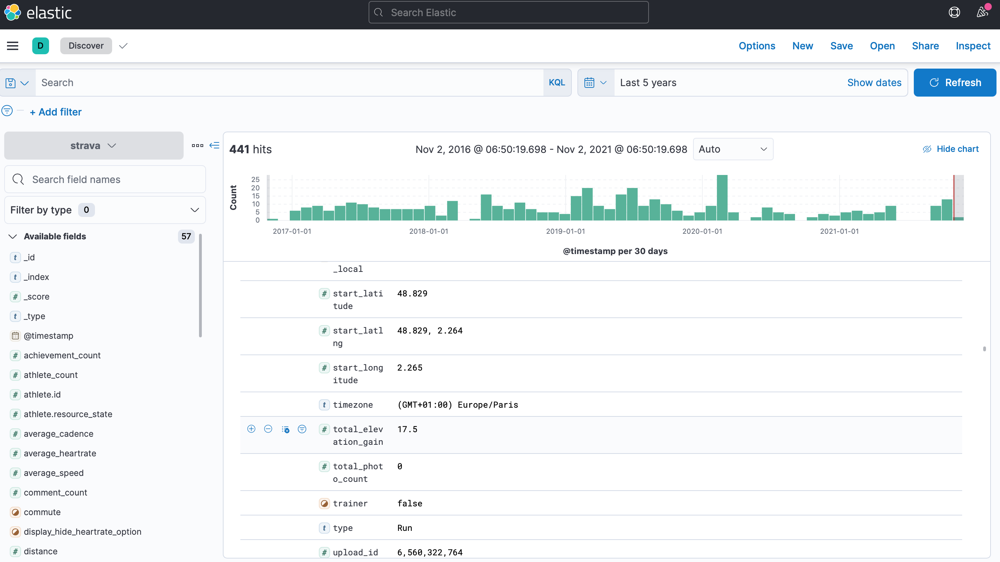
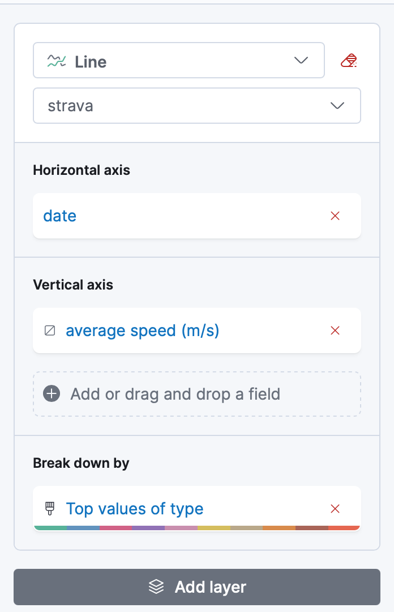
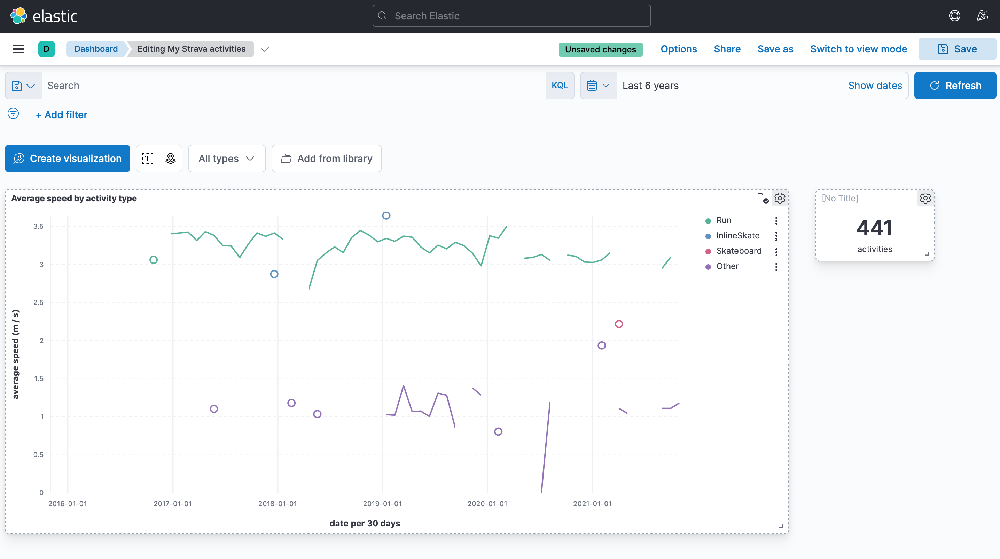

Assumed audience: people interested in data exploration.
I use strava.com to track my running/hike activities since a few years. Since Strava provides an API to export my activities, I had a try exploring them via a data visualization tool, Kibana. This article relates my first exploration.
Setup
Note that the code shown below uses zsh Unix shell.
Grab Strava activities
First step, create a Strava developer account, then create a Strava API OAuth2 access token (I have used the mgryszko/strava-access-token generator).
Second step, use the Strava API to grab my Strava activities, exporting all activities into separate JSON files:
for page in {1..10}; http GET "https://www.strava.com/api/v3/athlete/activities?include_all_efforts=&per_page=200&page=${page}" "Authorization: Bearer $TOKEN" > strava-activities-${page}.json
Since I have recorded around 300 activities with Strava, only three files have a non-empty content (empty JSON content is []), as seen with the wc command:
wc -c strava-activities-*.json
421462 strava-activities-1.json
2 strava-activities-10.json
288391 strava-activities-2.json
57159 strava-activities-3.json
2 strava-activities-4.json
2 strava-activities-5.json
2 strava-activities-6.json
2 strava-activities-7.json
2 strava-activities-8.json
2 strava-activities-9.json
767026 total
Third step, aggregate files into a single "Newline Delimited JSON" file (ndjson extension):
for n in {1..3}; cat strava-activities-${n}.json | jq -c '.[]' > strava-activities-${n}.ndjson
cat strava-activities-1.ndjson strava-activities-2.ndjson strava-activities-3.ndjson >> strava-activities.ndjson
Insert data into Kibana
We will run Elastic and Kibana using the official Docker images.
Start Elastic and Kibana:
docker network create elastic
docker run --name es-dataviz --net elastic --publish 9200:9200 --publish 9300:9300 --env "discovery.type=single-node" --env "xpack.security.enabled=false" docker.elastic.co/elasticsearch/elasticsearch:7.15.1
docker run --name kb-dataviz --net elastic --publish 5601:5601 --env "ELASTICSEARCH_HOSTS=http://es-dataviz:9200" --env "xpack.security.enabled=false" docker.elastic.co/kibana/kibana:7.15.1
Upload ndjson file [http://localhost:5601/app/home#/tutorial_directory] into an index named "strava":
Open Kibana's "discover" view for the last 6 years:

Explore data / create dashboards
Average speed per activity
Let's create a dashboard to visualize the activities' average speed by activity type (run, hike etc.):

It looks like this:

A few remarks:
-
I just realized that I have been running for 5 years! 😯
-
my running performance are slowing down... I guess I am getting older! 🧓
Anyway, it was cool to make my custom (but ephemeral) dashboard without paying for Strava. 😇
That's all! I'll try to go further an other time. 🤓